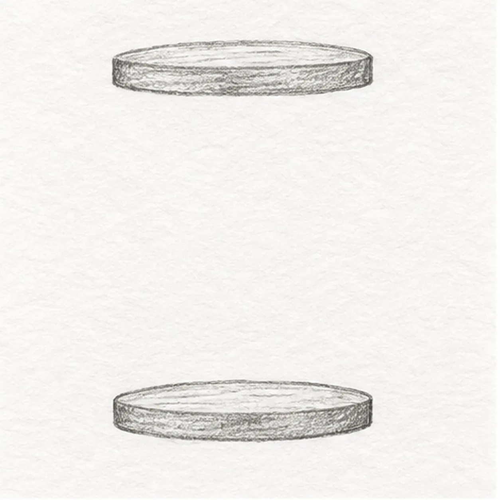
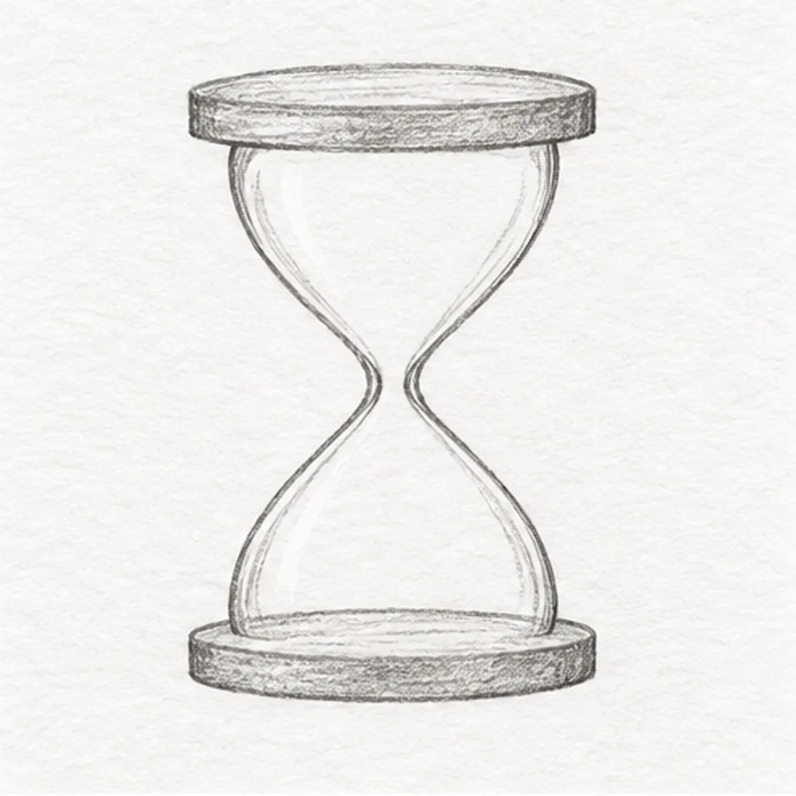
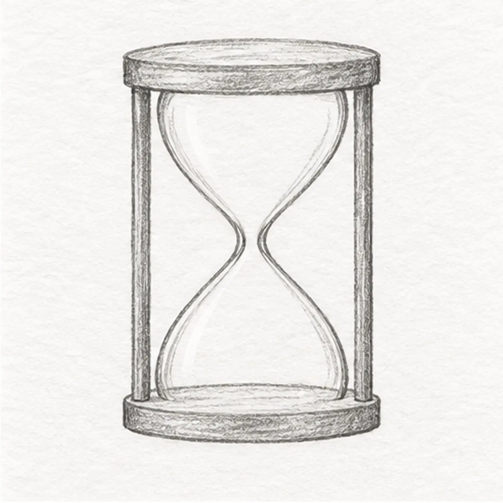
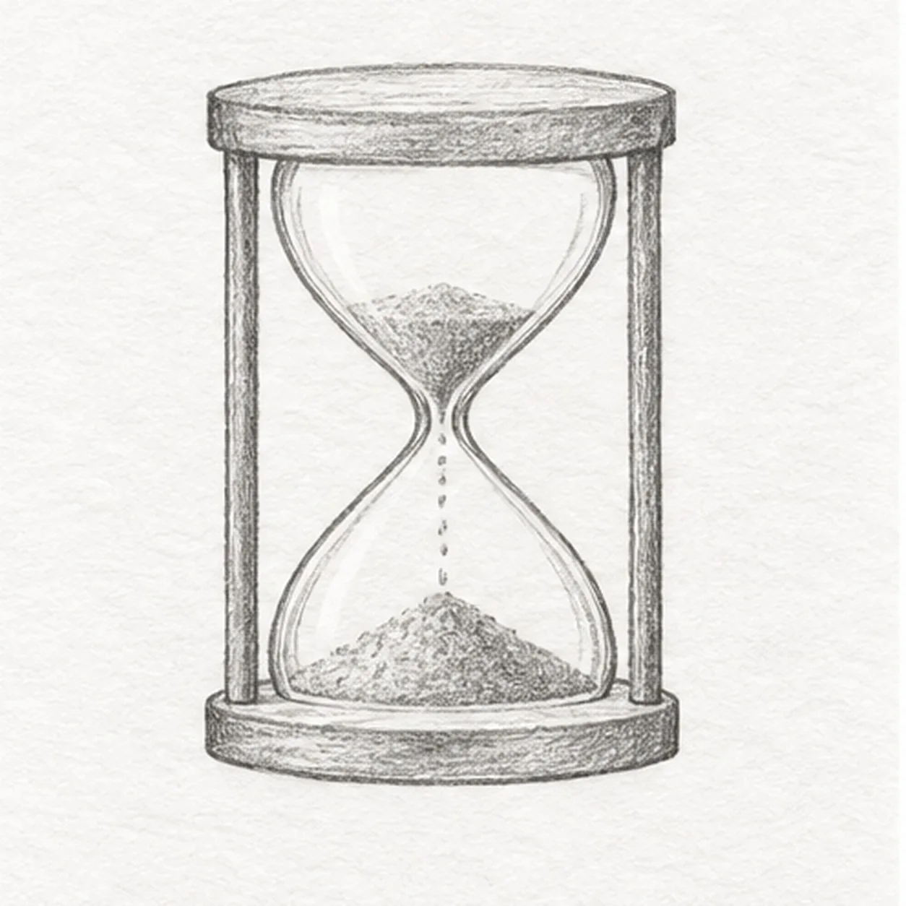
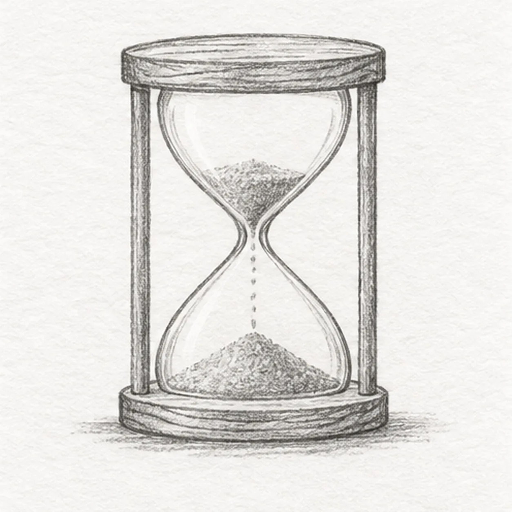

Pencil ready?
Let's draw a wooden hourglass
Treat this as one small practice round: build the subject lightly, notice the shapes, then darken only the lines that help the finished sketch.
-
01

Place the wooden plates
Draw one shallow oval plate near the top of the page and a matching plate directly below. Give both a narrow front edge, keep their centers aligned, and leave a tall open gap.
Sketch tip: Compare their widths and the empty space at each side before adding the glass.
-
02

Curve the glass bulbs
From just inside the top plate, curve both glass sides inward to a narrow central opening, then outward to land on the lower plate. Keep the left and right curves balanced.
Sketch tip: Pause at the waist; it must remain open enough for one thin falling sand stream.
-
03

Join the wooden uprights
Add one slim straight post outside each glass side. Each post begins under the top plate and ends on the lower plate without crossing the glass.
Sketch tip: Use the same two plate edges as attachment anchors for both posts.
-
04

Set the sand in motion
Place a small tapered sand pile in the upper bulb, a broad low pile in the lower bulb, and a thin broken stream through the waist. Keep every mark inside the glass.
Sketch tip: Aim the stream at the center of the lower pile and leave clear paper around it.
-
05

Add quiet wood grain
Lay a few short grain strokes along both plates and sketch one broken graphite shadow below the lower plate. Leave the two posts and sand contours fixed.
Sketch tip: Vary the grain length and keep the shadow lighter than the hourglass frame.
-
06
Shade the hourglass
Deepen selected existing graphite contours. Layer warm-brown pencil on the two plates and posts, muted ochre on both sand piles and stream, and pale graphite around the glass edges. Preserve paper highlights.
Sketch tip: Follow the plate ellipses and pull color down the posts; stop while the glass stays mostly white.